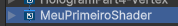

Shaders são os pais ou modelos dos materiais. Um material nada mais é do que uma instância de um shader. Portanto, o shader determina o comportamento (se irá haver uma textura, uma cor, transparência, reflexão, ou até aspectos mais complexos, como algum elemento procedural, noise, etc) enquanto que o material é responsável pelos atributos (qual é a cor, qual é a textura, quanto de transparência, impacto do noise...).
Shader Graph é uma ferramenta visual dentro do Unity que permite criar shaders de forma intuitiva, sem a necessidade de escrever código manualmente.
Para começar a usar o Shader Graph, será necessário ter um projeto configurado com o URP (Universal Render Pipeline). Em seguida, basta criar um novo Shader Graph:
Vamos criar nosso primeiro shader?
Nosso primeiro shader vai ser responsável por determinar a cor de um objeto 3D.
Crie uma pasta com o nome Shaders e entre na pasta.
Crie seu shader e dê um nome a ele. Em seguida, clique duas vezes no arquivo criado para abrir a janela do Shader Graph.
A interface do Shader Graph pode ser dividida em três áreas importantes:
Todas as texturas usadas nesse material foram tiradas de https://ambientcg.com/ e https://polyhaven.com/
É possível misturar uma cor base (como a que já temos) com uma textura. Isso é bem comum!
Para isso, vamos criar uma nova propriedade (variável) no Blackboard com o tipo Texture2D.
Com a propriedade selecionada, você pode escolher uma textura padrão para esse shader: no Graph Inspector, no espaço "Default Value", selecione a textura desejada. Caso você tenha baixado uma textura completa (com mapa normal, ambient occlusion, etc.), normalmente a textura desejada vai ter o nome "albedo" ou "color".
Arraste a variável para a área de trabalho. O node criado é um pouco diferente, ele, inclusive, não pode ser ligado diretamente ao "base color" do Fragment, como fizemos da última vez.
Para usar uma textura, precisamos de um node chamado Sample Texture 2D. Esse node é responsável por "ler" a textura e fornecer a cor correta para cada pixel do objeto 3D.
Crie esse node clicando com o botão direito na área de trabalho > Create Node > procure por "Sample Texture 2D" - você também pode apertar a barra de espaço para abrir a janela de criação de nodes.
Esse node tem como input uma textura, uma UV e um sampler. No momento o que nos interessa é a textura, que já temos! Agora basta ligar a nossa textura (node) ao Sample Texture 2D
Já a saída desse node são cores: RGBA para uma combinação de todas as cores da textura (incluindo transparência) ou então as cores separadamente, caso desejado.
Por fim, para combinar a cor base com a textura, precisamos multiplicar as cores. Essa é uma das formas de combinar cores, mas não é a única.
Para isso, crie um node multiply que terá como entrada a base color e o RGBA da textura. A saída do multiply deve ir para o base color do Fragment.
Crie uma nova propriedade "Scroll Velocity" - essa variável do tipo Vector2 vai determinar a velocidade que nossa textura se move pelo objeto. Altere o valor base para X = 1, Y = 0
Para "animar" esses valores, vamos usar um novo node: Time.
Multiplique Scroll Velocity por Time usando o node Multiply - esse será um Vector2 que aumenta com o tempo.
Crie um novo node Tiling And Offset - conecte a saída do Multiply à entrada "Offset" deste node.
Por fim, conecte o output do Tiling and Offset à entrada "UV" do Sample Texture 2D
Salve e veja o resultado! Experimente com outros valores no Scroll Velocity.
Para iniciarmos, é preciso alterar uma configuração no nosso Shader: queremos que o material seja entendido como transparente, e não opaco
Para isso, vamos no Graph Inspector > Graph Settings e vamos trocar o Surface Type para Transparent
Com isso, uma nova entrada vai aparecer em Fragment: Alpha - responsável por controlar a transparência do material.
A gente quer que a cor base do nosso material seja responsável por controlar a transparência. Para isso, precisar pegar só o valor do Alpha depois da multiplicação entre Textura e Cor Base
Felizmente existe um node para isso! Após o Multiply, adicione o node Split, que vai dividir o nosso valor RGBA em R, G, B e A. Puxe o A para o Alpha.
Alpha também pode ser usado para remover partes de um objeto. Com o Alpha Clipping, qualquer cor abaixo de um certo valor pode ser removida.
Vamos criar mais um shader baseado no exemplo de transparência (lembre de duplicar e abrir o novo)
No Graph Settings, troque o Surface Type de Transparent para Opaque (queremos que nosso objeto seja opaco!)
Ative o Alpha Clipping - uma nova entrada vai aparecer em Fragment, chamada Alpha Clip Threshold
Crie uma nova propriedade (variável) do tipo Float, chamada Alpha Clip Threshold. Dê um valor padrão de 0.5
Arraste a variável para a área de trabalho e conecte ao Alpha Clip Threshold do Fragment
Agora, crie um novo objeto e coloque esse novo material nele. Escolha uma textura que tenha partes pretas, como um brilho (branco)
Altere o valor do Alpha Clip Threshold e veja o que acontece com o material.
Outra forma de trabalhar com transparência é usando dithering. Dithering é um efeito que cria a ilusão de transparência através de um padrão de pontos, ao invés de usar transparência real.
Vamos criar mais um shader baseado no exemplo de alpha clipping (lembre de duplicar e abrir o novo)
Remova a propriedade "Alpha Clip Threshold" e o node na área de trabalho.
Crie um node "Dither" - ligue ele ao Alpha Clip Threshold no Fragment. Dê ao Dither o valor fixo 1
Crie um novo material com esse shader e altere o alpha da Base Color
A parte Vertex do nosso Master Node é responsável por cuidar da posição, normal e tangente dos vértices do modelo 3D.
Vamos criar um shader que "ondula" a superfície de um objeto 3D, como se fosse água.
Crie um Unlit Shader Graph novo - dê um nome.
No Blackboard, crie duas propriedades: Wave Speed e Wave Strength -- ambas float
Crie um node "Position", com Space "World". Esse node te retorna a posição de um vértice da malha.
Crie também o node "Time", multiplicando "Time" por "Wave Speed"
Como só queremos mexer no X e Z do objeto, vamos precisar usar o node "Split" para dividir a saída de "Position"
Em seguida, adicionamos (com o node Add) esses dois valores e adicionamos com a saída da multiplicação anterior.
Então, usamos o node Sine para transformar o resultado numa senoide
Multiplicamos o resultado do senoide pela propriedade Wave Strength...
E finalmente, criamos um Vector3 (node) substituindo seu Y pelo resultado da multiplicação
Agora é só somar esse resultado com a saída de um node Position no Space Object
E pronto! Só ligar ao Vertex - Position
Agora é só criar um material novo e colocar num objeto. Sugestão: faça isso num Plane.
Segue a colinha: ;)
O pós-processamento é uma etapa crucial na criação de gráficos visuais impressionantes em jogos e aplicações 3D. Ele envolve a aplicação de efeitos visuais adicionais após a renderização inicial da cena, aprimorando a qualidade visual e a atmosfera do ambiente.
Na Unity, o pós-processamento é frequentemente gerenciado através do componente "Volume", que vem junto com o URP. Esse componente oferece uma variedade de efeitos que podem ser facilmente aplicados e ajustados para alcançar o visual desejado.
Alguns dos efeitos de pós-processamento mais comuns incluem:
Para configurar o pós-processamento na Unity, siga estes passos básicos:
O pós-processamento pode transformar significativamente a aparência de uma cena, tornando-a mais realista, estilizada ou atmosférica, dependendo dos efeitos escolhidos e de como são aplicados.
É possível alterar parâmetros de materiais e efeitos de pós-processamento através de scripts em C#. Isso permite criar efeitos dinâmicos e interativos em resposta a eventos do jogo ou ações do jogador.
Para alterar parâmetros de materiais, você pode acessar o componente Renderer do objeto e modificar as propriedades do material. Por exemplo:
using UnityEngine;
public class ChangeMaterialColor : MonoBehaviour
{
public Color newColor;
private Renderer objRenderer;
void Start()
{
objRenderer = GetComponent();
objRenderer.material.color = newColor;
}
}
Também é possível alterar parâmetros de shaders criados por você
using UnityEngine;
public class ChangeFresnelPower : MonoBehaviour
{
public float fresnelPower = 1.5f; // Novo valor para a propriedade do shader
private Renderer objRenderer;
void Start()
{
objRenderer = GetComponent();
objRenderer.material.SetFloat("_FresnelPower", fresnelPower); // "_FresnelPower" seria o nome da propriedade no shader
}
}
Para alterar parâmetros de pós-processamento, você pode acessar o componente PostProcessVolume e modificar os efeitos diretamente. Por exemplo, para alterar a intensidade do Bloom:
using UnityEngine;
using UnityEngine.Rendering;
using UnityEngine.Rendering.Universal;
public class ChangeBloomIntensity : MonoBehaviour
{
public Volume postProcessVolume; // Coloque o Volume de pós-processamento no Inspector
private Bloom bloom;
void Start()
{
if (postProcessVolume.profile.TryGet(out bloom))
{
bloom.intensity.value = 5f; // Define a nova intensidade do Bloom
}
}
}